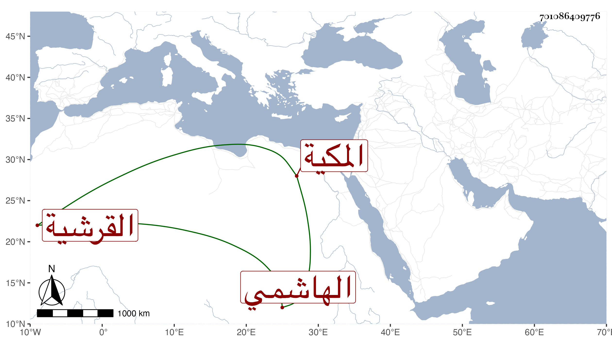

0902Sakhawi.DawLamic.ITO20230111-ara1.EIS1600.701086409776
Biography ID: 701086409776
510
علما ابنة الشهاب أبي العباس أحمد بن ظهيرة بن أحمد بن عطية ابن ظهيرة أم أحمد القرشية المخزومية المكية مها أمها كلثوم ابنة الجمال محمد بن عبد الله بن فهد الهاشمي . أجاز لها في سنة خمس وخمسين وسبعمائة فما بعدها العلائي والعز بن جماعة والقلانسي وناصر الدين الفارقي والخلاطي في آخرين كالمعين بن الرصاص ومحمد بن علي القطرواني ، وحدثت سمع منها التقي بن فهد وأخوه وابنه أبو بكر وكان فيها خير ودين ، تزوجها ابن عمها الجمال بن ظهيرة فولدت له ابناء المحب أحمد وسعادة أم كلثوم وغيرهما ومات عنها ثم ماتت في سنة ثمان عشرة بمكة ؛
